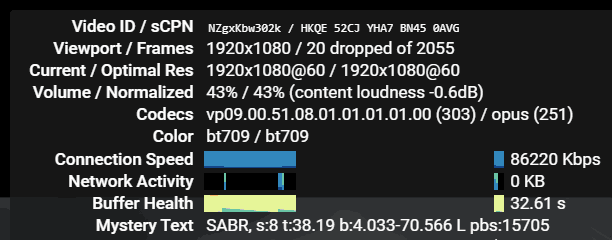

Об этом пишет Telegram-канал «ЗаТелеком» (IT-эксперт Михаил Климарев).
Сейчас сервис мониторинга Гугла показывает 8,5 пойнтов трафика из РФ. До “замедления” это было 40 пойнтов. То есть, сейчас примерно 20% от нормального состояния. То есть, речь идёт уже не о каком-то тротлинге, а самой настоящей блокировке».
Ранее российские власти уведомили провайдеров о замедлении YouTube до 128 килобит в секунду.
Как думаете, блок Ютуба капитально по ip ждать? Ведь сейчас ещё запрет справляется и другие сервисы по обману dpi, но траффик почему-то все равно стремительно упал
Ну упал траффик из России, а из других стран он вырос, странно не правда ли, и совпал рост траффика из за рубежа аккурат с началом блокировки YT. Можно посмотреть даже, как вырос рост продаж VPS/VDS у хостеров после введений разного рода ограничений для заблокированных ресурсов на территории РФ. Практически прямая корреляция, что-то вдруг гражданам из Польши, Нидерландов, Германии и США резко захотелось окунуться в просмотр чего-то доброго, вечного, и именно на YT, так и манит их запрещенка разная, на Медузу что-то чаще стали заходить из-за границы именно, никак у них тяга к новостям в России не ослабевает, я бы даже сказал растет.
На днях читал что цифры там немного другие, а именно 30-40 кб.с. Так что тут можно говорить уже не о замедлении, а о полном блокировании. Ибо что такое даже 128 кб.с , что-то со скрежетом будет грузиться, но это вечность в принципе.
и что? как это относится к россии и снятиям или продолжению блокировок? никому до этому нету дела. разве что только если транзитный траффик слишком большой и им это может казаться переплатой на магистралях. но ты серьезно думешь это как-то повлияет на решения ркн?
На решения РКН могут повлиять только решения РКН и тех, кто выше этого надзорного органа, остальное думаю обсуждать нет смысла, есть запрос на блокировку тех или иных ресурсов, значит так и будет, речь как бы совсем о другом.
Для голосового подкаста в OPUS в режиме SILK достаточно 5 кбит/с в narrowband. Возможно появятся форматы дистрибуции контента в виде голоса с пожатыми в какой-нибуть AVIF слайдами для скоростей dial-up.
Del
В таком случае делать там будет решительно нечего. Это все же не для подкастов платформа. Надеюсь, что до этого не дойдет.
Вы кое-что забыли. ) Ещё крайне необходима будет текстовая дорожка, а-ля сабы.
Параметры вашей трансляции 0.3 frames/sec поэтому для восполнения общей картины:
- на 01:27 Тейлор Свифт задрала ногу на рояль.
- на 03:19 - направила микрофон в зал и приложила ладонь к уху.
Использование трафика видеохостинга YouTube в России снизился до 8,9 процента. Об этом сообщает ТАСС со ссылками на данные компании Google.
Стало известно, что в 2024 году пиковое значение трафика YouTube в России составило 43,3 процента, таковым оно было в июле. С конца месяца значение постепенно снизились до 8,9 процента — значения, актуального на утро 23 декабря.
По данным компании, за последние три месяца максимальное значение трафика составило 33,9 процента. Оно было достигнуто 1 сентября.
YouTube практически заблокирован в России. Когда он станет полностью недоступен?
Самое интересное, что это происходит аккурат перед Новым годом и новогодними каникулами. Испортили людям праздник.
уже почувствовал) скорость дропнулась до 3,5 мбит/сек и на мобилке и на проводе.
у вас работает ютуб и на мобилке и на проводе?
На мой взгляд, гораздо интереснее того, что почти всегда сообщают СМИ, то, как РКН смог дотянуться до Вануату?..
Итак, люди пересели на впн и начали гнать трафик за забор. Учитывая то что этот трафик платный и на денежку влетает провайдер, это явно не останется незамеченным.
Мобильный интернет в России взлетит в цене из-за перехода на отечественное оборудование. До 2027 года планируется внедрение собственных станций 2G, 4G и 5G, а к 2029 году они должны покрыть всю страну. Операторы, включая «Мегафон» и МТС, уже заказали оборудование у компаний Yadro, «Булат» и «Иртея», сообщил гендиректор Telecom Daily Денис Кусков. Для создания устойчивой сети потребуется около 50 тысяч станций в год, а затраты будут переложены на пользователей.
Кто бы мог подумать.
Что уж там страну, всю планету, а за ней и ближайший космос.
По IP нет. По сути ничего по IP уже не блочится практически. А для этого используется DPI. Ни Discord по IP не заблокан, ни Cloudflare тот же, и ничего. Ну может только VPN-ы какие-то.
А вообще, что-бы качественно оценить эффективность замедления нужно смотреть общемировой траффик до ютуба по моему мнению. Если после очередного раунда замедления упал траффик не только российский, но и в целом, значит примерно на столько процентов, на сколько он упал, стало меньше людей туда заходить из России, в том числе через VPN и подобные вещи. (Конечно, думаю, будут погрешности но всё-же).
На (не до) 10 и не процентов, а гугловских попугаев.
С лета вырос трафик и в Нидерландах, но такой же рост был в 2022 году. А вот в 2023 не было такого заметного роста там лето-зима, странно.
Инстаграм, Фейсбук в частичном блоке по айпи
Откуда такая информация? Можете скинуть?
Можете сами проверить, включив запрет или гудбай и попробовав открыть Инстаграм или,например, torrentgalaxy.to который точно заблочен по айпи
Подтверждаю.
Через запрет никак не обходилось не декстопе.
Помог только конкретный айпи из Нидерланд, прописанный в hosts
Жесть. Но всё-равно большинство блокировок так щас не идут. Вряд-ли ютуб постигнет такая участь.
Нет, провайдеры даже заработают на этом.
Зарубежный трафик оплачивается не провайдером, а магистральщиками. Кроме этого абсолютно каждый уважающий себя оператор занимается арбитражем. Так что чем больше зарубежного трафика, тем лучше. Разве что сети приходится расширять.
в Нидерландах был большой рост трафика лето-зима в 2022 и 2024 годах. Причём, это не связано с войной. Т.к. февраль-июль 2022 не было роста. Странно.
Upd: Летом 2022 года зарезали ютуб в ДНР и ЛНР. Так что похоже есть корреляция с VPN.
Как сейчас хостеры потирают руки… Вангую, к лету цены на впс будут дропаться, особенно на зарубежные.
Много с чем есть корреляция, например с тем, что гуглобот резко стал дудосить cloudflare в невиданных ранее масштабах.)
Трудно сказать, у меня почему-то такой уверенности нет, в любом случае кто в выигрыше от всей этой ситуации с блокировками, так это владельцы серваков и впн, помоему сейчас скупаются даже те, на которые в здравом уме и не взглянул бы. Запрос на свои впс вырос, что в чатах творится (открытых и не очень), без мата не описать. Люди готовы на все, лишь бы Ютюб работал, ну и прочая “запрещенка”. Отсюда мне кажется растут ноги у “продам ключи, недорого”. Короче говоря, рынок предлагает, народ скупает. Может это и повлияет на то, что цены упадут, от переизбытка предложения на рынке хостеров.
Ну и я о том же. Предложений будет больше, чем спроса, и я даже почему-то уверен, что провайдеры с подключением новых абонентов будут втихую барыжить готовыми решениями, как это делается в Китае.
помоему сейчас скупаются даже те, на которые в здравом уме и не взглянул бы
Отсюда мне кажется растут ноги у “продам ключи, недорого”
Кто-то разбирается в электрике, ремонте. Кто-то в компьютерах, интернет технологиях. Первые просто пытаются приобрести доступ в рамках своих знаний.
Если им по шапке не дадут сверху, потому что провайдер в Китае далеко не равно провайдер в России, ну я про правовой момент, был в Китае одно время, потом перебрался в Гонконг, и конечно вижу пропасть в реализации доступа к сети и прочих инструментов которые регулируются в правовом поле. Даже интернет телефония и прочие сетевые решения для бизнеса и дома в таком избытке, что удивительно что их бесплатно не раздают. Сюда плюсуем довольно высокий уровень сервиса и поддержки, довольно большие скидки на подключение умного дома и т. д. Будут ли так щедро раздавать пакеты “все включено” провайдеры в России, ещё большой вопрос.
Пока не увидел роста трафика в других странах. Пик в Нидерландах, о котором говорится в статье, пропадает, если выбрать меньший диапазон дат. Постепенный рост трафика в Нидерландах может происходить по многим причинам. Корреляция не означает наличие причинно-следственных связей.
Некоторые люди писали на Хабре, что далеко не все готовы заниматься обходом. И это правда: людей останавливает сложность (мне проще не смотреть, чем разбираться), стоимость (мне проще не смотреть, чем платить) и бесполезность (всё, что мне нужно, есть на вк или рутубе).
Многие, кстати, таки учатся, просто путем проб и ошибок.
Ну, это вообще в природе человека, идти по пути наименьшего сопротивления, если есть еда в холодильнике, зачем бежать убивать корову, идти в лес и выслеживать кабана с риском для жизни. Так и здесь, у многих просто уже апатия, ничего не хочется делать, купить готовое решение, где по нажатию одной кнопки у тебя есть доступ к ресурсами, а настройкой и копанием в гайдах и документации пусть интузиасты занимаются.
Дропаться в смысле дороже? С чего вы решили что будет больше именно предложений, если вырастет то как раз спрос?
Drop - с английского, Ронять, Уронить.
Это дешевле.
Потому что школьный курс экономики. Спрос всегда порождает предложения, пока рынок не насытится. Разгон предложений будет продолжаться еще какое-то время, и для увеличения ликвидности товара цены будут падать, товар нужно сбыть, чтобы не улететь в издержки.
Ну что же, будем поднимать отечественный(зачеркнуто) иностранный рынок VPS всей страной!
Не дадут. Если не палиться. Существует множество способов реализации, найдут лазейку в законах. Провайдерам нужны клиенты, нужны бабки, поэтому они пойдут на всё даже под угрозами. Вот к примеру я более чем уверен, что даже закон Яровой в большинстве случаев “имеется ввиду”.
Вот, к примеру, серая схема - пров покупает канал у магистральщика, по документам он никуда не используется, то есть тспу на нем нет. Поднимает впн, создает акки, добавляет как подпольную доп услугу абонентам. Профит. И по закону всё чисто, и в случае палева проще будет выкинуть сервак в окно и никто ничего не видел. Конечно, грубоватый пример, но что-то похожее имеет место быть и скорее всего будет.
Нужны конечно, вопрос кто из провайдеров останется на плаву, бесконечно цены на услуги они поднимать не смогут, с учётом ремонта и замены оборудования, демпинговать может себе позволить большая тройка, ну как мне кажется, а мелкие провайдеры думаю отвалятся, плюс разгон инфляции тоже вносит свою лепту. Но, посмотрим конечно, как рынок себя поведёт, точнее то, что от него осталось.
Тут на самом деле наоборот, количество провайдеров может увеличиться. Как и с впс, могут предоставлять более выгодные условия.
Мелкие провайдеры, разумеется, могут отвалиться, но последствия для связи будут катастрофические, потому как вся периферия держится на этой мелочи. Радикально снижать доступность связи только ради каких-то ограничений доступа к запрещенному контенту точно никто не будет, не имею ввиду роспозор - им то как раз пофиг.
в целом всего инета, на проводе кстати работает (без замедления) если через edge смотреть, как будто доступ к российским серверам есть, потому что весь остальной инет тупит жёстко, а ютуб норм.
Так ведь они потом дальше по цепочке перепродают его аплинкам и самим провайдерам?
Можно, если не сложно, пример? Хотя бы самый типовой и банальный?
Для меня тут другое показательно ) значит тех, кто умеет обходить ТСПУ без применения VPN – 20% пользователей )) Не мало
Мне всегда казалось что мелочь как раз оборудованием закупается у крупняка, та же Йота пользует мощности Мегафона, хотя с ней наверное плохой пример, так как она же и есть по сути Мегафон, только немного в профиль. Но проще говоря, оборудование тоже стоит не мало, как и его обслуживание, все эти издержки лягут на плечи абонентов, проще говоря тарифы начнут расти, медленно но верно. Любопытно что анонсировали полный переход на полностью (полностью?) Российский телеком к 2029 году. Хочется конечно посмотреть что из этого выйдет. Вот, кстати, довольно занимательное чтиво на эту тему -
Оборудование связи (рынок России)
Сомневаюсь, что их 20%. Видя насколько “соображает в компах” большинство, это кажется невозможным. Даже если им кто-то настраивает.
На самом деле если их много, это плохо, потому что закроют.
Может где-то недоблокировали. Может провайдеры что-то запровайдерили, чтобы у них работало
Я очень условно, я так же не верю, что 20% старых пользователей ютуба умеют в обход ТСПУ. А вы правда думаете, что при большом количестве пользователей с обходом ДПИ РКН сможет присекать обходки? Я с сетями “на Вы”, мне многое не понятно, но подход zapret/goodbyedpi с мусором, с разделением пакетов с их перемешиванием – кажется, что выявлять это “на лету” практически невозможно. Например, вот этот случай:
Как я понял, речь ведь в том числе и о том, что они не могут включить это всё дело на постоянку и для всех ресурсов, т.к. это накладно. И то, вот они включили и вот сразу же нашлось решение.
Решение будет работать ровно до того момента, пока ркн не захочет сломать фейк гугла, как только это произойдет так Ютуб работать и перестанет
Фейк от гугла где? В той же Быстро вообще фейков гугла нет, однако все работает на рос/забугор GGC и самом ютубе.ком
фейк гугла уже сломан до некоторых ggc, при этом они работают на чистом сплите
Где ты фейки гугла видел? Давно уже никем не используются.
Я про tls_clienthello_www_google_com.bin
В самом популярном решении из готовых батников во всех стратегиях
Я рассуждаю с позиции баланса уровня анноя государства и возможностей технических решений.
Как только уровень анноя переходит некоторый порог при отсутствии адекватных технических возможностей начинают включать админ ресурс. Законы, кары.
Лицам, принимающим решения, глубоко наплевать как это все устроено. Они сказали сделать. И это будут делать тем или иным способом. Но лишь до определенного предела. Пока уровень анноя достаточно низок, на это могут закрывать глаза. Но если окажется, что каждый второй узбек нажимает на кнопку, и у него все разблокируется, это будет как красна тряпка. Мы - государство , наши законы не соблюдают !!
Я понял.
А кол-во issues ты там видел? )
Что за шовинизм?
Да, но а какая стратегия тогда используется в быстро,что без фейка googlevideo работает у меня на мтс чистый сплит в запрете не срабатывает как писали выше
Пользуются. Как и запретом v68, а там по-другому нельзя ) Самое популярное решение, блин
@electrifying А что, скачать и посмотреть какая-то религия не позволяет?
Там же от лица государства этот тэйк )))
На самом деле дело не в расизме/национализме, а в технических знаниях. Диалог начался с того, что использовать обходки ТСПУ – технически сложная задача и требует знаний. Странно ожидать подобных знаний от людей, у которых не то что wifi дома нет, друг с Таджикистана говорит, что там и электричество то не всегда дают.
Пусть так и напишет, каждый второй житель РФ.
Он же так и написал: “Каждый второй Таджик”. Таджик – житель Таджикистана.
Для таких людей давно придумали лаунчер и сборки. Хотя в Таджикистане они, наверное, не помогут, ибо сделаны для нас
Не будем здесь разводить срач. Все мы знаем какие у нас тут таджики и узбеки, явно не программисты сюда едут работать. Вряд ли от них стоит ожидать рутирование телефонов, запуск блокчека, анализ стратегий. Типичный не обремененный знаниями тыкальщик воцапа, которых большинство, но среди приезжих - в особенности. И если возникнет чудо кнопка, и даже они смогут на нее нажимать, то долго это не продлится с последствиями для всех остальных
Я знаю, которые всем этим занимаются. Думаю, у вас когнитивное искажение, возникающее при просмотре великодержавной империалистической пропаганды. Если бы я тут писал, как я отношусь к московитам, меня бы давно уже забанили.
Мда. Как говорится: “Нам всем говорили, что побочек от прививки от ковида нет. Тогда почему все с ума сошли?” ))
@bolvan вообще странно слышать что-то вроде “меня устраивает, что эта ниша остаётся сложной” от человека, который поддерживает свой проект, делает его удобным, новая документация только чего стоит. Наоборот хочется как-то поддержать и популяризировать zapret.
По поводу баланса я согласен, но не вижу технических средств для решить поставленную государством задачу “здесь и сейчас”, кроме чебурнета. И мне кажется, могу ошибаться, что на этот шаг в ближайшие пару лет государство вряд ли пойдёт, даже если сервис превратиться в простую кнопку, которую будут способны нажимать кто угодно, где угодно итп. Несомненно РКН продолжит борьбу, несомненно законы будут ужесточаться, но не думаю, что zapret`у стоит бояться популярности. Повторю, могу ошибаться.
Все в сравнении узнается. Факт в том, что более 90% не смогут им пользоваться без сборок. И меня это вполне устраивает. Это хорошо.
Знаешь, это даже на руку. Пусть отвлекают внимание админов роспозора от реально работающих стратегий.
В таком случае непонятно для кого предназначен ваш инструмент обхода ?
Человеку не обладающему большими техническими знаниями (такому как я) нужны простые решения.
А технические специалисты имеют возможность сделать для себя свой впн.
И в первую очередь это делает сам РКН 
Для всех, кто найдет его полезным и кто готов разбираться.
Поддерживать остальных цели нет
Типа сделал для себя и поделился
Технические специалисты понимают, что прямой канал всегда быстрее и стабильнее, чем VPN
Не всегда, надо сравнивать. Такое происходило и до внедрения ТСПУ.
Не просто быстрее чем ВПН, а вообще быстрее чем без обходов- реально как будто идёт укол в адреналина в сердце тспу и оно настолько бодрится, что весь траффик ускоряется, такой эффект например ещё заметен , когда warp работает с его кэшами и роутингом
Лично мне поект напоминает философии Gnu/Linux. Изначально это дело предназначалось для программистов. Или тех, кто умеет пользоваться коммандной строкой. А об использовании этого софта обывателями стали думать уже другие люди и значительно позже
Быстрее - нет, не всегда. Мне доводилось прокидывать туннели и бывало скорость там до цели была выше, чем по прямой, всё от маршрутов зависит.
А вот стабильнее - это правда. Риск дропа минимальный.
Чудеса у вас какие-то квантовые ) И провайдер все в обход пускает и ничего не блокирует, и пакеты по vpn идут быстрее чем без него, это при том, что маршрут инкапсулированных пакетов не отличается от маршрута самого vpn-канала. Ну разве что где-то DPI их не притормаживает )
Квантовых чудес не бывает. Пока что. 
Притормаживать пакеты может что угодно, даже какой-нибудь старый, выживший из ума свитч, лежащий на чердаке хрущевки второй десяток лет. Факторов много. Но в идеале, когда всё работает, тогда конечно, ты прав.
Вы поясните, как у вас vpn-трафик устанавливается через этот свитч, а пакеты внутри vpn мимо него 
Был у меня свитч, когда ремонтировал, обнаружил просадку по питанию. Он нормально работал, скорость не дропалась, а вот если через него коннектиться по туннелю, то пакеты просто сыпались, при этом сам коннект не падал. С другим свичом на замену всё было отлично.
Так что привел показательный пример.
Уже давно заметил, что даже с яндекса приходится скачивать через CF WARP. Про гитхаб и т.д. даже не говорю.
screenshot
Ну, на Дальнем Востоке, например, VPN может быть быстрее, если до него более оптимальный маршрут, т.е. не через Москву. И надёжнее.
Йота. Хоть тариф и для модема, а режет скорость до публичных линуксовых зеркал. Даже по https. Кроме альта, про него видимо не знают.
Точно знаю, что через VPN может быть меньше пинг чем без VPN.
В наших краях Genshin Impact плохо функционирует. Пинг меньше 200 не видел с лета.
Через VPN, что находится в Японии, пинг отличный 50 всего-лишь.
Скорость скачивания с некоторых сайтов тоже становится выше кстати.
У самого Йота, подтверждаю что режет.
Извиняюсь, но зачем? Вам не нравится запрет, вы хотите его прибить? Или вам не нужен свободный и легкий доступ в интернет через запрет?
Чем меньше людей знает, чем меньше популярность, тем дольше и без проблем будет работать.
Так всегда и везде.
Или вам так сильно чешется сыграть в игру “у кого яйца крепче” с правительством?
Выскажу свое мнение. Чем больше людей будут осведомлены об обходах, чем проще будет доступ к обходам обывателю, тем веселее будет РКНу с этим бороться. Будут развиваться новые методы обходов, будет движ, будет постоянное недовольство большинства (глядишь так может РКН и раскрутит гайки, ха-ха конечно, но мало ли). Плюс в стране будет повышаться компьютерная грамотность (спасибо РКНу, никогда бы не стал разбираться и заморачиваться с настройкой ВПНа).
Ну и в конце концов, грустно наблюдать как люди сдаются, и переходят например с Ютуба в ВК, и в другие клоаки, так и хочется прорубить окно в Европу дать людям связь с внешним миром, чтоб рунет не стал комнатной историей, чтоб люди не замкнулись в этом пространстве, и не переформатировались совсем. А без этого пару лет и бац, а у тебя всё окружение теперь смотрит ВК Видео, обсуждают хрень навязанную государством и их подручными компаниями, и теперь и обсудить с ними нечего, ведь ты смотришь Ютуб, но зато ты меньшинство и Запрет работает без проблем, это да…
Вы думаете что по тихой воде будете смотреть ютуб пока все остальные смотрят вк ?)
Просто всех замочить на данный момент они не могут, так как слишком много людей обходят разными путями и когда эти многие сдадутся, они начнут вычислять всех остальных, ну то есть нас )) Поэтому тут надо наоборот помогать этим всем, пусть не запретом, но чем нить попроще, чтоб фокус был на них, тем самым отведём от себя взгляд в сторону и понаблюдаем за этим цирком. Чем больше флуда в пакетах сети, тем лучше, сервера их не выдержат, начнут падать, а это откинет их тему с электронными бабками назад в прошлое. Дело в том, что люди которые принимают решение в нэте они полный ноль, на них просто работают те кто шарит, но они ведь тоже люди и в большей степени они на нашей стороне и я думаю что многим из них не нравится то что они делают. Подумайте сами или плохая карма или хорошая, с плохой долго не протянешь и они это должны понимать )
сражаться с кучкой индихакеров-задротов сильно проще, тем более что всегда можно сказать “они вражеский ютуб смотрели, поэтому мы их казним” и никто не пикнет. да и потом, никто не мешает вам разрабатывать свои методы обхода ТСПУ и не делиться ими с миром.
Тут не до Ютуба, когда весь фриланс, или вернее заработок висит на обходе цензуры от чудиков из РКН. И без Запрета хоть вешайся.
Этим на меньшинства плевать, пока тебя не видно и не слышно, они делают что-то только по указке сверху. Даже налоговой на всех плевать, кто поднимает меньше 750к в месяц, откуда деньги бы не шли, если людей ни где не видно.
У нас в РФ всегда так, сделал, отчитался перед начальством, и норм, а дальше там хоть трава не расти, всем плевать. В этом и плюс жизни в РФ, что ни кому ничего не нужно по сути вещей, и со всеми можно договориться.
Но когда большое начальство о тебе знает, и ты ему не нравишься, это уже проблематично.
На данный момент к этому все идет, и тут как мне кажется виноват больше не РКН, а тот факт что монетизацию отключили. Поэтому аудитория современных блогеров точно частично перейдет в рутубы и ВК, просто потому что этим самым блогерам как-то заработать захочется.
Непонятно как там можно зарабатывать с нерабочей системой рекомендаций.
Легко, эксклюзивный контракт когда на площадку заходишь. Джарахов же говорил, что он с двух роликов купил квартиру в Москве
грустно наблюдать как люди сдаются, и переходят например с Ютуба в ВК
И постят там контент! Да, грустно. У ютуба много неофициальных фронтендов, а жирно и глючно VK приходится сёрфить самому.
И ведь есть относительно неплохие Rutube и Платформа, но нет. Популярным аналоговном стал VK, который по жирности давно FB побил.
А толку? Это всего лишь морда, если забанен хухелвидево.ком, то никакой фронтенд не поможет.
Шо до глючности вк видево фронтенда, то там давно забили хер на оптимизацию, в приложении весь движ.
Понятно. Вопросов нет.
Я имел ввиду безконтрактным. Говорят, что от обычного хранилища файлов не отличаются эти площадки (сам пока не пользовался).
Я говорил только в контексте юзабилити, даже ютубу есть чему поучиться. И альтернативные ютубо морды юзаю-то тоже не от хорошей жизни, не из-за блокировок.
Вот, что бывает при увлечении полифилами, которые придумал гугл.
Все героические “сражения” существуют только в вашем мире голливудских фильмов про “индикахакеров-задротов”. В реальности никто не будет “сражаться” с неуловимым джо, простейший пример - XMPP и IRC, зумеры просто ниасиливают такое, соотвественно госмашина в лице ркн не возбуждается, а министерство правды не выдает по госканалам видео “в ирке школьника научили методам самоубийства”. Другой пример - goodbyedpi, мало того что доступен под виндовс, так еще и был везде распиарен дурачками с пикабу, куча сборок, гуев и тд, результат - практически полностью бесполезен на данный момент. С запретом будет тоже самое, если продолжать в том же духе.
За XMPP государство охотится, т.к. им нарки пользуются. Причём ламеры, по инструкции делают, сами не понимая. Откуда я это знаю. Разработчик Xabber на гитхабе писал, что на него ФСБ давило.
Ассанж не мой герой, однако он на своём примере и примере викиликс показал обратное вашим словам.
xmpp это лишь протокол, общаться можно и http заголовками и через netsend, не говоря уже про живое общение. Вопрос лишь в удобстве, тут я с вами согласен.
Проблема гудбая, насколько я понимаю (а я мало понимаю в windows, не общался с ними уже очень давно), это попытка сделать универсальный обход. Я не слышал о том, что гудбай умер и больше не работает, возможно вы правы. Однако я не представляю технических возможностей у РКН на данный момент, которые бы обнаруживали запрет. Т.е. они конечно есть в рамках одного клиента, но чтобы ТСПУ на лету могли обнаруживать все дурилки запрета – на данный момент это фантастика. Скажем так, я больше поверю в то, что РКН запретит весь внешний интернет и его тупо отрубят, чем они научатся обнаруживать сплитнутые и перемешанные tcp пакеты, отправленные с задержками.
Ваши слова да форумчанам в уши.
Тут практически все уверены, что дескать 16 (или когда там) января примут приказ, и моментально будут прилетать штрафы за использование запрета, который будет вычисляться роспозором по щелчку пальцев.
Я то же самое третий месяц твержу, что кабель проще перерубить, чем вычислить систему обхода.
интересно как они будут обнаруживать обход тспу? т.е. они запретят протоколу tcp/ip собирать разбитые пакеты воедино? боюсь представить, какую порку ркн устроит udp протоколу
Для реконструкции протокола понадобятся такие вычислительные мощности, которых ещё лет 20 не будет. Я имею ввиду в масштабах имеющейся клиентуры.
Читаешь форум, одни фантасты сидят 
ркн с августа почти каждый месяц что-то выдумывали, я регулярно подкручивал запрет. уверен, они не остановятся, но да, на лету восстанавливать протокол каждого клиента – проще по товарищу в погонах поставить возле каждого роутера в стране. что опять же не отменяет каких-то хитрых ходов. есть и более простой путь – чебурнет.
чебурнета не будет раз они решили штрафовать людей. как они шрафовать тогда будут?
Ну, чебурнет маловероятен, я имею ввиду в том виде, о котором хомячки, начитавшись Оруэлла, из каждого утюга вопят. Но что-то будет, скорее всего близкое к китайскому варианту. А у них там в сети жить можно, и ВПН продается повсеместно.
а Дагестан от внешней сети отключали просто так? ) я не думаю, что у них есть точный план, скорее они пробуют разные варианты, в том числе одновременно.
Не просто.
Самое интересное было в новостях во время этого отключения. ФСБ накрыла крупную ячейку. И тут же снова включили. Совпадение? Не думаю.
Ну и заодно протестировать глушение связи в регионе при гипотетических волнениях вполне нормальная практика. Везде так делают, во всех уважающих себя странах, это проблема внутренней безопасности.
А всему верите что вам говорят в новостях ?
Я наверно лет 20 назад, перестал смотреть новости вообще и все любые общественные каналы, всё что на кабельном и радио обычное что на приёмнике можно поймать.
А знаете почему ? Не люблю когда врут или навязывают что не будь.
Это называется очистить свой разум от всего шлака. Попробуйте как не будь и через месяц вас перестанет беспокоить всё, нервная система восстановится.
ЗаТелеком пишет, что “замедление ютюба замедлилось. Видна очередная полка в примерно 10-12 пунктов”.
Значит, остались те, кто смотрит Ютуб через обход, так?
Хоть мало-мальски, но за событиями надо следить, совсем в анабиоз уйти не получится. Нынче даже в пещере отшельника будет роутер с интернетом.
О, вспомнилось. Читала о женщине, которая ушла в добровольное отшельничество в пещеру. Эксперимент такой был. Но связь с внешним миром у нее была, там видеокамеры стояли. И вот она в результате этого эксперимента пришла в такое состояние, что стала этот wi-fi чуть ли не физически ощущать, мешал он ей сильно.
Вы просто не поняли. Музыку я слушаю только ту, которую я хочу слушать и такую в нашей стране не слушает никто, потому что все слушают то что им навязали. Новости, я обычно от людей, можно сказать от клиентов, от хороших знакомых, которые знают от первого источника, без искажений или сплетен, я не буду читать даже если кто то что напишет из новостей, только проверенный должен быть годами человек, который не обманывает, вся остальная инфа это шлак для меня. Вот если вы войдёте в моё доверие, то буду прислушиваться к вашему мнению, но пока вы только инфу берёте из не проверенных мною источников, я смотрел эту телегу что вы скидывали и в доверия этот источник мне не зашел и читать лично я его не буду.
Я бы вам скинул то что я бывает читаю, но думаю лучше не надо, легче будет засыпать )
Ну а на счёт вай фая, у меня он автоматом отключается ночью и утром включается. Во первых ночью никто не по беспокоит, а во вторых, меньше волн, а они влияют и очень сильно на организм человека, от куда я это знаю ? Я когда то был связан с подобной фигнёй, знаю много про все эти волны на практике )
Да, потому что получаю инфу из проверенных источников, а не из сми. Я телек вообще не смотрю уже лет, наверное, двадцать. И новостные ленты аггрегаторов тоже не читаю, там постоянно какой-то трэш.
менты накрыли крупную ячейку и типа поэтому выключали нэт и протестировали заодно и вам не кажется что всё это фуфло ? Лично я связи не вижу, а только сброс, поэтому ваш источник я думаю не надёжный
Спойлер
Они решили пугать людей. Вы вообще помните, с чего началось то обсуждение? С новости в ведомостях, которая была подана как “Роскомнадзор намерен контролировать все попытки обхода блокировок. Это следует из нового ведомственного приказа”. Из ведомственного приказа это никак не следует, но новость расползлась именно с таким заголовком и отдельным абзацем текста: “Это значит, что РКН сможет получить информацию об интернет-пользователях, которые заходят на заблокированные в России интернет-сайты.” Что невозможно даже в теории, по крайней мере без кучи оговорок. Не кажется странным?
Примерно в тот же момент заметил какой-то новый тип ботов, которые начали рассказывать, как все перекроют со дня на день, всех оштрафуют, поэтому надо переползать на vk и rutube.
Я вижу в этом наспех спланированную информационную кампанию, когда внезапно выяснилось, что оставаться на youtube предпочитают даже бабушки.
Да вот нет, связь как раз имеется. Я уже написал, убить двух зайцев. Может быть, реально совпало на этапе подготовки, но совпало удачно. Кроме того, хороший шанс протестировать, как определенные ячейки будут держать связь в условиях её отсутствия.
На самом деле всего лишь догадки, даже источники не могут абсолютно подтвердить, нет доступа к такой инфе. Но вероятность большая.
Нет тут никакой кампании. Просто очередной журналист решил получить прибавку к зарплате. Остальное додумали сами читатели и сотворили свою манявселенную с чебураторами и штрафами.
Искусство громких заголовков еще не потеряно, а чем шумнее, тем прибыльнее.
Может и были какие-то боты, но, к сожалению, очень многие сами так думают.
А я думаю регион был выбран не случайно, как говорится горячая кровь, они ждали, будет бунт или нет, раз там прокатило, то значит прокатит везде, всё остальное значения не имеет
Остались только те, кто использует запрет, byedpi или гудбайдпи там же учитывается только РФ траффик, а если ВПН врубить уже мимо статистики идешь
Какой к черту бунт? На каком основании? Население предупредили, причину назвали. Всё выполнили в срок. Все довольны.
Проверяются потенциальные бунты уж точно не таким образом.
Я не вникал, так вон помню прочитал, человек тут на форуме писал что у них там и сразу сделал вывод и то что все довольны, я в этом сомневаюсь. Давайте эту тему оставим для трафика ютуба, в котором я тоже сомневаюсь, во всей этой статистике, так как вижу договорняк
Разумеется, довольны не все, если каждого поспрашивать, всегда будет какое-то количество мамкиных бунтарей. Но в целом население поняло и приняло ситуацию.
А с трафиком ютуба там точно договорняк наших “трех российских бигтехов”.  С целью убрать конкурента. Рыночек так работает. Не думаю, что хухел в свое время был белым и пушистым, когда занимал поисковую нишу, уничтожая яху.
С целью убрать конкурента. Рыночек так работает. Не думаю, что хухел в свое время был белым и пушистым, когда занимал поисковую нишу, уничтожая яху.
Если бы остались только пользователи “обманов DPI”, то график был бы на нуле. Не надо преувеличивать распространение этих методов. Трафик к ютубу идёт от провайдеров у которых ютуб не замедляется, либо по причине отсутствия замедления как такового (маленькие никому не известные операторы оказывающие услуги в районе рублёво-успенского шоссе, элитных жк на чистых прудах, на улице Улофа Пальме, ну вы поняли), либо из-за расположения серверов GGC перед ТСПУ как можно ближе к пользователям (это нормальная архитектура, таких провайдеров много). Ещё, в датацентрах на хостингах и пр. нет ТСПУ, со многих хостингов в мск нет никаких замедлений ютуба. Тот трафик на графике огромен, по абсолютным меркам, это явно не zapret и gdpi.
С учетом, что траффик не упал на проводных почти) Спросите с августа график до ютуба у Ростелекома например
А чёж тогда “ассоциация операторов” обращение накатала в спортлото, что конкуренция не честная, абоненты отключаются от стационаров без ютуба и просили заблокировать полностью всем, чтоб было по честному? Что-то не клеится.
Я же написал с августа , в декабре на мобилках резанули, траффик проводных никто не показывает почему-то
Вот я и спрашивал есть ли свидетельства работы ютуба на провайдерах с ТСПУ.
Ну, ладно. Забудем о ТСПУ. У меня есть пара примеров работающего ютуба даже после 20 декабря:
- Один чел сказал, что у него дома не работает, а на мобильном пчелайне работает. Неизвестно, что там у него стоит на мобильном, но вообще он чайник и настроить ему некому. Хотя, может и поставил что-то из гугл плей, но не факт.
- На рабочем интернете у него ютуб работает (фирма по производству печей и подобного, смотрит в обед). Но опять же неизвестно, не намутили ли что там сис. админы сами.
У меня по сей день ютуб работает без обхода, т.к. сервера до тспу установлены. Хз как им РКН до сих пор по шапке не дал, т.к. провайдер, вроде, не самый мелкий - по всему СПб услуги оказывает. Даже хвастаются, что самый быстрый провайдер в городе, но это такое, реклама.
Все “доТСПУшные” сервера прописаны блоком (скажем, hosts) у соски “Ревизора”.
Поэтому он при проверке лезет к ggc, стоящим снаружи ТСПУ. Что ожидаемо фэйлит.
Не? ))
Догадки…
Музыку я слушаю только ту, которую я хочу слушать и такую в нашей стране не слушает никто, потому что все слушают то что им навязали
Не, я случаю наше. Потому что интересно знать о чём поют. А рок музыка везде примерно одинаковая. И её точно у нас не навязывают. Так что можно.
перестал смотреть новости вообще
С некоторых пор тоже окуклился. О совсем уж важных новостях узнаю на форумах или от знакомых. Только некоторые события изредка загугливаю. Раньше читал France 24 English и Aljazeera. Они не такие истеричные в RU-UA отношении, но пропалестинские. И Meduza из оппозиционных ещё не самое плохое СМИ.
Может учитывают и тех пользователей которые открывают приложение проверить не починился ли ютуб или кому достаточно послушать на 144p.
Убери скрин, не пали провайдера…
В МСК знаю двух провайдеров, у которых так же всё работает.
Научаться бороться с запретом или отрубят внешний интернет = суть-то одна, @bolvan выше правильно сказал, что чем больше пользователей у любого метода обхода тем выше уровень раздражения государственной машины, соотвественно делать обход доступным каждой обезьяне - приближать этот момент, только и всего.
Почитал, очень…странный, мягко говоря, разработчик с пассивной агрессией в каждом сообщении, открыто называющий всех русских наркоманами, а также придумывающий сотни отмазок почему OMEMO и OTR не нужно (не он не хочет имплементировать, тут ок, ну не хочет так не хочет, а именно НЕ НУЖНО), называя несогласных с ним “крипто-раком”. Лишний раз порадовался децентрализации XMPP которая позволяет мне в принципе не сталкиваться с подобными типами.
Я считаю иначе. Если бы РКН не начали бы установку ТСПУ, не появился бы и zapret. Не появись запрета, у народа бы не было инструментов для обхода и главное – понимания, как устроены ТСПУ и как именно работает обход. Тогда бы РКН не стала бы бороться с обходами. А это бы не привело к новым техникам и новой архитектуре того же запрета. Сейчас запрет умеет применять разные политики для разных хостлистов, умеет фейковать ClientHello и много что ещё. Даже если сравнивать запрет образца августа, когда народ массово начал искать решение, это совсем другой проект.
Позиция “я научился пользоваться zapret, больше никому о нём не рассказывайте” вполне понятна, но лично мне не близка. Я считаю, что чем больше сопротивления будет оказано РКН, тем быстрее они либо откажутся от своих “идей”, либо быстрее отключат внешний интернет. В любом случае популяризация zapret`а, это катализатор перехода на следующий этап. И да, @bolvan всё верно сказал, странно с этим спорить, но попытки цензурировать интернет и борьба с этой цензурой, это нормальный, естественный процесс который в любом случае происходит и будет происходиться. Государство всегда будет желать контролировать любую область, которая ему, государству, угрожает. Как по мне, чем быстрее перейдём на следующий этап, тем быстрее эволюционируем.
Вы же в курсе что этапы эволюции сопровождаются большим вымиранием неприспособившихся? Метеорит упал - динозавры вымерли, а жабы, суслики и тараканы выжили. Т.е. выжили, как-бы, далеко не самые лучшие и совершенные виды, а самые убогие, маленькие и незаметные. И потребовалось хер знает сколько миллионов лет пока не появился обезьян из него человек. По-сути, вы предлагаете пожертвовать вот этими всеми непрошаренными неайтишниками в пользу эволюции средств обхода. Но проблема в том, что новые средства обхода будут иметь ещё более высокий порог входа и многие которые сейчас видят себя прошаренными окажутся за бортом вашей эволюции. И в итоге, мы всё-равно приходим к обходам для узкой группы прошаренных лиц. Ещё не факт, что после введения белых списков, ИИ в ТСПУ и пр. авторы нынешних средств обхода смогут сотворить чудо, всегда есть объективный предел (и целесообразность). Уже сейчас возможен полный кванмён, чисто технически для РКН это решаемая задача. Якобы экономический коллапс, гитхаб, андройд, Китай, Казахстан - сказки и домыслы, также говорили про ютуб всякие Климарёвы: “Экономика рухнет если заблокируют!”… Ага и где? Рухнула в августе? Рухнула в декабре? Блогеры остались без просмотров и всем похер. Поэтому не надо не ко времени устраивать вселенский выпук и вызывать огонь на себя - щас мы как эволюционируем, ух как эволюционируем…
zapret существовал еще до ТСПУ.
Он начался как простенькая резалка через window size и заменялка регистра Host: еще в 16 году.
Государство не откажется от попыток все контролировать. Они все пытаются подмять во всевозможных сферах. Не стоит форсировать этот процесс, давая им очередную красну тряпку. Вряд ли от этого будет кому-то лучше. Наше государство эволюционирует в основном в сторону централизации и закручивания гаек. Но это лишь признак разьезжающейся ситуации под ногами и неспособности на конструктивные решения, учитывающие интересы большинства. Так что как таковой эволюцией я бы это не назвал. Это скорее латание дыр топорными методами. Эволюция предполагает привнесение каких-то новых принципов, улучшающих качественно состояние системы. Может в каких-то сферах это и происходит, но точно не в плане увеличения свобод
Повторю, я лишь высказал своё мнение, вы высказали своё. Кто из нас прав решать не мне и не вам, если вообще кто-то должен быть прав в итоге.
Динозавры вымерли, дав эволюции возможность создать нас с вами, вы же не против? Выживают не убогие, а простейшие.
Сейчас пользоваться ВПН умеют почти все. Пару лет назад это было не так, не смотря на наличие кучи “красивых” впн типа nordvpn и других единорогов, однако openvpn достаточно быстро научились блокировать на уровне протокола. Начали искать другие протоколы и вдруг вспомнили про shadowsocket и прочие vless. Сейчас ВПН, который умеет скрывать свой протокол, это обычное дело и клиенты типа outline может не такие “красивые”, как у коммерческих продуктов пару лет назад, но вполне себе пригодны для использования даже пожилыми людьми.
Обход ТСПУ и сейчас требует куда бОльших технических навыков, чем просто поставить ВПН и очевидно, что РКН и дальше продолжит учить ТСПУ ровно до тех пор, пока не упрётся. Я лично не верю, что однажды какой-то славный ИИ от РКН научится различать обходы или им хватит мощностей, чтобы деконструировать пакеты в запросы каждого пользователя. Намного более очевидным решением как по мне – интранет. Чем быстрее придём к нему, тем быстрее научимся его обходить. Но то, что мы к нему придём – без сомнений.
Под эволющей я имел в веду нас, общество, а не государство. Как по мне, мы, именно как общество, как технически грамотное общество, сильно эволюционировали за последние пару лет благодаря действиям государства. zapret я встречал и раньше, но активно начал его использовать/изучать в августе. Я не могу назвать себя экспертом в сетях, но пару раз перечитав документацию старую, мне кажется я преисполнился. Низкий поклон за проделанную работу и за документацию в том числе. Повторю, это только моё мнение, но чем больше людей станет технически грамотными, чем больше мы как общество будем требовать от государства закручивать всё новые и новые гайки, т.к. старые научились обходить, тем быстрее это государство сломается. Людям, которые с гордостью заявляют, что у них даже email нет, им явно сложнее чем нам. Принимая очередной закон что либо запретить, с каждым разом они всё больше себя запрещают.
p.s. про wsize, регистры хоста итп интересно, в начале десятых стали популярны wafы, фаерволы на уровне веб-серверов и/или прокси. Грубо говоря, даже если ты видел sqlinj, эксплуатировать её порой было невозможно, т.к. запросы резались wafом. Мы обходили их как раз примерно теми же методами. Разные регистры заголовков, несуществующие методы, несуществующие протокколы и подобный мусор, который интерпретировался веб-сервером, но обходил waf.
Да, какая-то часть качает свои технические знания, и это неплохо.
Но все это тоже лишь латание дыр в проблеме, которая лежит совсем в другой области и гораздо шире.
Сколько ни изучай IT, невозможно этим решить фундаментальные проблемы нашей цивилизации, которые и привели к необходимости сейчас изобретать какие-то заплатки.
Настоящая эволюция настанет тогда, когда zapret станет не нужен. Не потому, что он перестанет справляться, а потому что справляться будет не с чем
Как и победа в войне случится не тогда, когда одни убьют других. А когда стрелять больше не понадобится
Возможно. Просто я вижу так, что нужно оттягивать этот момент. Время, единственное на что нам остаётся уповать. Популяризация обходов среди широких масс, и как следствие привлечение внимания, лишь приближают жесть. Опять же пример gdpi и zapret четыре месяца назад. Всё было хорошо, пока на этот форум не полились потоки страждующих, которых услужливо сюда отправили “лидеры мнений” и просто писатели говностатеек на пикабу, дзене и т.д. Получился худший сценарий: те которые понабежали теперь zapret и gdpi кроют хуями (нужно искать стратегии, сложно, инструкции нет пошаговой для аутистов и пр.), те же кто тут был раньше тоже получили кувалдой по голове, и имеют те же проблемы. И кто выиграл от популяризации gdpi и zapret? А ни кто! Даже РКН не выиграл, вынужден теперь ТСПУ ковырять в противодействие. Сказка о рыбаке и рыбке в реальности - все проиграли и никакой эволюции.
+1, однако пока имеем то, что имеем. ркн, тспу, zapret, vpn итп.
Так и есть. Война порождает только войну.
И если уж она неизбежна, то не стоит спешить с эскалацией
Я и согласен с вами и не согласен. С одной стороны вы правы и популяризация обходов приведёт к ужесточению со стороны РКН. С другой стороны отсутствие доступа к свободной информации и наличие в виде информации только официальной пропаганды – тупит людей, люди начинают верить в пропаганду. Что логично, раз нет другого мнения, значит то, что говорят по телевизору – правда. Меня это пугает больше, чем усложнение ТСПУ. Как по мне, проще разобраться с новыми блокировками, чем слушать друзей/знакомых, которые начинают говорить голосом Соловьёва и прочей пропаганды.
Ну и я не согласен с вами, что какие-то там статьи на пикабу сделали хуже для gdpi или zapret. gdpi из коробки старается быть “универсальным” решением для windows, зная специфику, это сразу кажется странным. zapret же никогда себя так и не позиционировал, да есть blockcheck, но автор регулярно во всех ишью и темах на форуме повторяет как мантру – стратегии всегда разные, пробуйте.
От популяризации победили те, кто разобрались. Победили авторы/мейнтенеры gdpi и zapret, т.к. благодаря популярности многое, что откладывалось на потом, стало реализовываться активней. У меня zapret как начал работать в августе, так и работает до сих пор, многим друзьям настроил. Да, порой приходится модифицировать стратегии, но это лучше, чем находиться по vpn постоянно. Ну и намного веселее, мне приятен сам факт обхода ТСПУ в то время, когда по телеку рядятся “это сервера гугла устарели”
Тут половина форума знает какой у меня провайдер, так как проблем от него было больше чем пользы, о чем я не раз тут писал. Эти “замечательные” сервера, которые до ТСПУ стоят, только вред приносят, т.к. там 15-20-секундные задержки перед началом воспроизведения видео, поэтому я их давно блокнул через ublock и использую только магистральные.
Энивей, скрин убрал.
Вам шапочку из фольги дать? Я о ситуации на своем провайдере тут с августа писал, и до сих пор они как стояли незаблокированными - так и стоят. Как же так?! Я думал на этом форуме полно шпионов РКН! /s
А эту манцу продолжают форсить? Телек не смотрю, иногда только что-то долетает оттуда по прицнипу пассивного курения, с чужим дымком, так сказать. Но не исключал бы, что мы дожили до частичной сбычи этой сказочки. Некоторые видео, бывает, отскакивают по 403, но если попробовать чуть позже, то открываются. Или приходится прямо во время открывания подождать секунд 10, пока CDN подтащит недостающее. Я нередко смотрю не через браузер, а через виндовый MPC-BE

{kind=link}
{kind=link}
и на нем все это особенно заметно. Если не выпала 403-я и не отваливаемся по таймауту, то открывается и воспроизводится. При повторной попытке воспроизводится уже моментально, без задержек. То есть, возможно, что из локального пула что-то вытесняется, т.к. в нем нет места. Или же в работу их аппаратуры кое где вмешались наши чтобы искусственно доусугубить ситуацию до нужных параметров.
Так а с чего должен грузится процессор, если декодирование видео идёт с видеокарты
Задаюсь этим же вопросом, когда браузер начинает отжирать десятки процентов или вплоть до упора. Видимо, происходят какие-то копи-бэки, вытаскивание данных из-под виртуализации, скейлинг для попаутов/миниокон, даже если они не используются или еще что-то. От размера кадра зависит, в том числе. В плеере, разумеется, ничего такого нет, там до 5% процентов. Декодирование аппаратное и там и там.
Кстати, сегодня впервые в жизни ютуб потребовал залогиниться. Больше ничего не отдает. Не отдам и я ему свой моб номер. Надо будет попробовать виртуальные.
А гугл требует мобильный сейчас? Писали, что он не посылает код восстановления на российские номера. В я микрософте недавно регистрировал акк: на российский номер он поморщился и предложил ввести запасной емейл.
Год тому назад попробовал залогиниться в очень старый гугловый акк и оно запросило моб. Ничего нового пока не регал и не хотелось бы — пытаюсь до всей этой регистрационной гадости по возможности не дотрагиваться)
Сейчас тестово отключил ipv6 и ютуб ожил. Куки даже не чистил. И MPC тоже заработал. Вернул ipv6 с другим адресом - пока все ок. Понятно. Автоматизируется легко при необходимости.
Это потому, что всякие эгоисты потребляди выставляют 4К, 8К, стопятьсотК. 720 достаточно для вменяемой картинки. Ещё в 2022, когда начались первые высеры о блокировке ютуба, выставил на всех устройствах низкое качество, а на ПК 720 (для подготовки к завороту ют в VPN), привыкаешь очень быстро. 10 лет назад на ютубе самое ходовое разрешение было 480, а мэйнстримные телики и моники уже были 1080.
А вообще, отвал yt по “естественным причинам” - вопрос времени. Новых GGC не будет, прямого пиринга с гуглом у провайдеров не будет, гугла в рф скоро также не будет, когда-то оставшееся оборудование отожмут в счёт штрафов. А сейчас лучшее что можно сделать, чтобы продлить жизнь ютутба у нас, это снизить качество видео для снижения нагрузки на каналы и GGC. Это всё-равно придётся делать после полной блокировки (и как следствие неработоспособности GGC), так что лучше начать уже сейчас.
Чушь полнейшая, у провов каналы наоборот простаивают, врубайте хоть 12к 
Интересно, зачем мне на 4К телевизоре в 65 дюймов 720р, если я могу смотреть 4К? Не слишком ли вы зашли в оскорблении других?
Ну и собственно говоря, это чушь. Каналы наоборот освобождаются, так как ютуб в РФ блокирован
Нет! Я хочу верить в добрую сказку.
Каналы наоборот освобождаются, так как ютуб в РФ блокирован
Может быть, с каналами разное происходит. Смотрю на графики, публикуемые MSK-IX, именно у них там подросло, с крутыми сверхпиками. Примерно понятно почему. И примерно понятно, что 80%-го снижения в целом по стране с учетом “дерусификации” части трафика, скорее всего, нет.
А что есть? Где бы еще посмотреть цифры, желательно что-нибудь контринтуйтивное для самопроверки.
Но что происходит не с каналами, а с GGC не всегда понятно.
Не, ну понятно, что зарубеж трафик сильно растет по “некоторым” причинам. Я писал именно про внутрироссийский трафик к кеширующим серверам гугла. И экономить на качестве видео из-за того, чтобы беречь GGC в России смысла не вижу никакого
Ок. Снижайте качество видео, проводите учения по переводу ют в VPN.
Но можно ли доверять цифрам конкретно по трафику ЮТ от, допустим, каких-то провайдеров или обменников трафика? Видя общественно-политическую конъюнктуру станут ли они публично публиковать цифры, скажем, показывающие отсутствие большого снижения этого трафика (если так на самом деле у кого-то происходит)? Что-то сомневаюсь, скорее будут помалкивать ничего не публикуя, прикинувшись лопушком. Либо будут говорить то, что хотят слышать объюзеры-запрещаторы.
Видимо то же, что и всегда происходило: износ, деградация. Но в отличии от раньше, теперь новых не будет, поэтому снижайте качество видео.
Есть провайдеры у которых ЮТ не заблокирован, им имеет смысл беречь GGC. Конечно, абонентам эгоистам это объяснять бесполезно, они думают только о себе.
а зачем мне на телеке 1366x768 смотреть больше чем в 720р? мне кажется это пустая трата трафика. или есть смысл? тут говорили что мол прова реально бесит когда гоняют большой трансмагистральный трафик
Ну в вашем случае и не надо выше. Хотя чисто в теории даунсайз с ФуллХД может показать чуть лучшую картинку, но заметит ли это глаз? Не думаю.
Но экономить на качестве видео при возможности смотреть его в высокой четкости - извините, но нет. Можете считать меня эгоистом
подумайте о бедненьком хухеле!
А хухелу теперь вообще по хухелу на рф. Они ещё хоть что-то делают для поддержания инфраструктуры по инерции, только потому что это огромная неповоротливая корпорация. Когда-то были составлены планы, всё расписано, бюджеты выделены и так далее. Но это закончится, как и у операторов “закончится” оборудование. Подумать надо о бедненьких провайдерах и снизить качество видео.
Я-то искал общие сводки, конечно же. Общие и публикуются. Если они уже цензурируют что-то в них со страху или по приказу, то тогда им надо вот такое
{kind=link}
как-то аппроксимировать, размазывать по году, или сунуть за пазуху, наверное)
В тех участках видео, где что-то движется, более высокобитрейтный стрим может выглядеть получше. Скажем, я предпочту при том же размере кадра VP9 10 bit или AV1, если доступен, хотя монитор не HDR и не оч большой. На гигантских экранах артефакты квантизации позаметнее, конечно. Хотя далеко не всякое видео достойно такой заботы. И там не такая гигантская разница по битрейту. И в обычном веб плеере ничего такого не выбрать даже.
а что если ркн все это устроил чтобы спасти оборудоваие гугла? официально они ничего же не блокировали? может тайно хотели помочь продержаться? не гос измена ли это?
А что мешает вас взять и спросить у этих операторов? Это не секрет как бы совсем, даже скриншот можно попросить, но проще тупо в интернете писать очередную хрень.
Ничего не мешает, у своих спрашивал в качестве абонента - прикидываются лопушками (правильно делают). В РТК тоже лопушки: “Мы не замедляем, всё работает штатно” (ведь не врут, сами они действительно не замедляют).
И что там нового? В августе заблокировали на крупных домашних, в декабре на мобильных. Это и так известно. Что по домашним нет особого замедления в декабре, тоже понятно было и неделю назад. Декабрьская просадка за счёт мобилок. Я говорил про данные подтверждённые самими операторами, т.е. провайдер Х заявляет: у нас снижение по ют такое-то, а не просто чел написал: “наблюдаю по проводным то и то”. По каким проводным? В каких регионах? Потом, по каналам на зарубеж нет выделения ютуб-трафика именно от конкретных операторов, так сказать, на земле. Выделить ютуб-трафик внутри тоннелей (VPN) невозможно в принципе, но это другая тема. И ещё, есть ли у РКН такие данные по операторам? Могут ли они вообще их собирать? Вот это интересно.
Не просматривается препятствий для получения государством в целом этих данных в случае с такими компаниями, как Ростелеком, Транстелеком, и любыми такими же, которыми целиком или частично государство владеет прямо или через любое юрлицо. Самостояние прочих можно даже не оскорблять, экстраполируя данные в пропорции к их абонентской базе. Что-нибудь подгребут косвенно через каких-нибудь партнеров. Еще что-то подберется в рамках каких-нибудь уголовных дел, не обязательно телекомовских.
Это не просто чел, а тот самый оператор
YouTube сжимает с довольно экстремальным битрейтом. Поэтому, даже если вам не нужны высокие разрешения, лучше выбирать не меньше VP9 1080 60p. Однако ресурс GGC имеет смысл экономить и выбирать качество меньше, если вам не критично. Или скачать и смотреть локально, если планируется часто пересматривать что-то любимое.
Для полной экономии местных GGC, лучше их не испльзовать, но тогда нагружаются трансграничные каналы. Не зря же в MSK-IX поставили новую стойку. Придётся во всём искать компромисс.
Телеком-дела. Васильев.
Please open Telegram to view this post.
Это сообщение не поддерживается в Вашей версии Telegram.
А новые версии беспрерывно грузят проц.
Это прекрасно.
[quote=“denium, post:187, topic:14048”]
YouTube сжимает с довольно экстремальным битрейтом
[/quote] ?
там экстремально низкий битриейт, везде надо включать разрешение на уровень выше, если экран 720 - 1080 и т.д.
в yt-dlp можно выбирать низкое разрешение с высоким битрейтом
Подтверждаю. Если монитор 1440р то картинка 2160р выглядит гораздо лучше. С ютубом так всегда было.
в ютубе нет высоких битрейров, там везде заниженные
отличия будут в кодеках
на мой субъективный взгляд на vp90 будет чуть получше картинка
У ют есть высокий битрейт при одинаковом разрешении.
Иногда открываешь видео и видешь 1080р и над ним 1080р премиум высокий битрейт.
Да и ytdpl тоже видит премиальные потоки.
а это что
ID EXT RESOLUTION FPS HDR CH │ FILESIZE TBR PROTO │ VCODEC VBR ACODEC ABR ASR MORE INFO
───────────────────────────────────────────────────────────────────────────────────────────────────────────────────────────────────────
sb3 mhtml 48x27 0 │ mhtml │ images storyboard
sb2 mhtml 80x45 0 │ mhtml │ images storyboard
sb1 mhtml 160x90 0 │ mhtml │ images storyboard
sb0 mhtml 320x180 0 │ mhtml │ images storyboard
233 mp4 audio only │ m3u8 │ audio only unknown Default, IOS
234 mp4 audio only │ m3u8 │ audio only unknown Default, IOS
599-drc m4a audio only 2 │ 2.13MiB 31k https │ audio only mp4a.40.5 31k 22k ultralow, DRC, MWEB, m4a_dash
600-drc webm audio only 2 │ 2.81MiB 41k https │ audio only opus 41k 48k ultralow, DRC, MWEB, webm_dash
599 m4a audio only 2 │ 2.13MiB 31k https │ audio only mp4a.40.5 31k 22k ultralow, MWEB, m4a_dash
600 webm audio only 2 │ 2.83MiB 41k https │ audio only opus 41k 48k ultralow, MWEB, webm_dash
139-drc m4a audio only 2 │ 3.37MiB 49k https │ audio only mp4a.40.5 49k 22k low, DRC, IOS, m4a_dash
249-drc webm audio only 2 │ 4.07MiB 59k https │ audio only opus 59k 48k low, DRC, IOS, webm_dash
250-drc webm audio only 2 │ 5.42MiB 78k https │ audio only opus 78k 48k low, DRC, IOS, webm_dash
139 m4a audio only 2 │ 3.37MiB 49k https │ audio only mp4a.40.5 49k 22k low, IOS, m4a_dash
249 webm audio only 2 │ 4.08MiB 59k https │ audio only opus 59k 48k low, IOS, webm_dash
250 webm audio only 2 │ 5.42MiB 78k https │ audio only opus 78k 48k low, IOS, webm_dash
140-drc m4a audio only 2 │ 8.95MiB 129k https │ audio only mp4a.40.2 129k 44k medium, DRC, IOS, m4a_dash
251-drc webm audio only 2 │ 10.37MiB 150k https │ audio only opus 150k 48k medium, DRC, IOS, webm_dash
140 m4a audio only 2 │ 8.95MiB 129k https │ audio only mp4a.40.2 129k 44k medium, IOS, m4a_dash
251 webm audio only 2 │ 10.37MiB 150k https │ audio only opus 150k 48k medium, IOS, webm_dash
597 mp4 256x144 15 │ 2.13MiB 31k https │ avc1.4d400b 31k video only 144p, MWEB, mp4_dash
602 mp4 256x144 15 │ ~ 5.71MiB 83k m3u8 │ vp09.00.10.08 83k video only IOS
598 webm 256x144 15 │ 1.63MiB 24k https │ vp9 24k video only 144p, MWEB, webm_dash
269 mp4 256x144 30 │ ~ 11.71MiB 169k m3u8 │ avc1.4D400C 169k video only IOS
160 mp4 256x144 30 │ 2.97MiB 43k https │ avc1.4D400C 43k video only 144p, IOS, mp4_dash
603 mp4 256x144 30 │ ~ 9.65MiB 140k m3u8 │ vp09.00.11.08 140k video only IOS
278 webm 256x144 30 │ 4.16MiB 60k https │ vp09.00.11.08 60k video only 144p, IOS, webm_dash
631 mp4 256x144 60 10 │ ~ 21.35MiB 309k m3u8 │ vp09.02.11.10 309k video only IOS
330 webm 256x144 60 10 │ 12.75MiB 184k https │ vp09.02.11.10 184k video only 144p60 HDR, IOS, webm_dash
694 mp4 256x144 60 10 │ 7.39MiB 107k https │ av01.0.00M.10 107k video only 144p60 HDR, IOS, mp4_dash
229 mp4 426x240 30 │ ~ 21.50MiB 311k m3u8 │ avc1.4D4015 311k video only IOS
133 mp4 426x240 30 │ 6.70MiB 97k https │ avc1.4D4015 97k video only 240p, IOS, mp4_dash
604 mp4 426x240 30 │ ~ 17.97MiB 260k m3u8 │ vp09.00.20.08 260k video only IOS
242 webm 426x240 30 │ 7.55MiB 109k https │ vp09.00.20.08 109k video only 240p, IOS, webm_dash
632 mp4 426x240 60 10 │ ~ 39.92MiB 577k m3u8 │ vp09.02.21.10 577k video only IOS
331 webm 426x240 60 10 │ 28.53MiB 413k https │ vp09.02.21.10 413k video only 240p60 HDR, IOS, webm_dash
695 mp4 426x240 60 10 │ 16.24MiB 235k https │ av01.0.01M.10 235k video only 240p60 HDR, IOS, mp4_dash
230 mp4 640x360 30 │ ~ 55.46MiB 802k m3u8 │ avc1.4D401E 802k video only IOS
134 mp4 640x360 30 │ 13.68MiB 198k https │ avc1.4D401E 198k video only 360p, IOS, mp4_dash
18 mp4 640x360 30 2 │ ≈ 22.60MiB 327k https │ avc1.42001E mp4a.40.2 44k 360p, MWEB
605 mp4 640x360 30 │ ~ 40.87MiB 591k m3u8 │ vp09.00.21.08 591k video only IOS
243 webm 640x360 30 │ 20.74MiB 300k https │ vp09.00.21.08 300k video only 360p, IOS, webm_dash
633 mp4 640x360 60 10 │ ~ 86.67MiB 1254k m3u8 │ vp09.02.30.10 1254k video only IOS
332 webm 640x360 60 10 │ 65.46MiB 947k https │ vp09.02.30.10 947k video only 360p60 HDR, IOS, webm_dash
696 mp4 640x360 60 10 │ 35.36MiB 511k https │ av01.0.04M.10 511k video only 360p60 HDR, IOS, mp4_dash
231 mp4 854x480 30 │ ~ 93.59MiB 1354k m3u8 │ avc1.4D401F 1354k video only IOS
135 mp4 854x480 30 │ 22.85MiB 330k https │ avc1.4D401F 330k video only 480p, IOS, mp4_dash
606 mp4 854x480 30 │ ~ 71.21MiB 1030k m3u8 │ vp09.00.30.08 1030k video only IOS
244 webm 854x480 30 │ 24.88MiB 360k https │ vp09.00.30.08 360k video only 480p, IOS, webm_dash
634 mp4 854x480 60 10 │ ~154.10MiB 2229k m3u8 │ vp09.02.31.10 2229k video only IOS
333 webm 854x480 60 10 │ 127.33MiB 1842k https │ vp09.02.31.10 1842k video only 480p60 HDR, IOS, webm_dash
697 mp4 854x480 60 10 │ 69.56MiB 1006k https │ av01.0.05M.10 1006k video only 480p60 HDR, IOS, mp4_dash
136 mp4 1280x720 30 │ 91.58MiB 1325k https │ avc1.4d401f 1325k video only 720p, MWEB, mp4_dash
247 webm 1280x720 30 │ 52.45MiB 759k https │ vp9 759k video only 720p, MWEB, webm_dash
311 mp4 1280x720 60 │ ~296.82MiB 4293k m3u8 │ avc1.4D4020 4293k video only IOS
298 mp4 1280x720 60 │ 160.32MiB 2319k https │ avc1.4D4020 2319k video only 720p60, IOS, mp4_dash
612 mp4 1280x720 60 │ ~257.19MiB 3720k m3u8 │ vp09.00.40.08 3720k video only IOS
302 webm 1280x720 60 │ 127.63MiB 1846k https │ vp09.00.40.08 1846k video only 720p60, IOS, webm_dash
635 mp4 1280x720 60 10 │ ~338.37MiB 4894k m3u8 │ vp09.02.40.10 4894k video only IOS
334 webm 1280x720 60 10 │ 294.45MiB 4259k https │ vp09.02.40.10 4259k video only 720p60 HDR, IOS, webm_dash
698 mp4 1280x720 60 10 │ 207.37MiB 2999k https │ av01.0.08M.10 2999k video only 720p60 HDR, IOS, mp4_dash
312 mp4 1920x1080 60 │ ~490.20MiB 7090k m3u8 │ avc1.64002A 7090k video only IOS
299 mp4 1920x1080 60 │ 303.34MiB 4387k https │ avc1.64002A 4387k video only 1080p60, IOS, mp4_dash
617 mp4 1920x1080 60 │ ~426.75MiB 6172k m3u8 │ vp09.00.41.08 6172k video only IOS
303 webm 1920x1080 60 │ 233.98MiB 3384k https │ vp09.00.41.08 3384k video only 1080p60, IOS, webm_dash
636 mp4 1920x1080 60 10 │ ~513.32MiB 7424k m3u8 │ vp09.02.41.10 7424k video only IOS
335 webm 1920x1080 60 10 │ 455.29MiB 6585k https │ vp09.02.41.10 6585k video only 1080p60 HDR, IOS, webm_dash
699 mp4 1920x1080 60 10 │ 335.04MiB 4846k https │ av01.0.09M.10 4846k video only 1080p60 HDR, IOS, mp4_dash
623 mp4 2560x1440 60 │ ~974.04MiB 14088k m3u8 │ vp09.00.50.08 14088k video only IOS
308 webm 2560x1440 60 │ 675.56MiB 9771k https │ vp09.00.50.08 9771k video only 1440p60, IOS, webm_dash
639 mp4 2560x1440 60 10 │ ~ 1.20GiB 17747k m3u8 │ vp09.02.50.10 17747k video only IOS
336 webm 2560x1440 60 10 │ 1.06GiB 15670k https │ vp09.02.50.10 15670k video only 1440p60 HDR, IOS, webm_dash
700 mp4 2560x1440 60 10 │ 942.05MiB 13625k https │ av01.0.12M.10 13625k video only 1440p60 HDR, IOS, mp4_dash
628 mp4 3840x2160 60 │ ~ 1.90GiB 28111k m3u8 │ vp09.00.51.08 28111k video only IOS
315 webm 3840x2160 60 │ 1.62GiB 24045k https │ vp09.00.51.08 24045k video only 2160p60, IOS, webm_dash
642 mp4 3840x2160 60 10 │ ~ 2.13GiB 31563k m3u8 │ vp09.02.51.10 31563k video only IOS
337 webm 3840x2160 60 10 │ 1.88GiB 27881k https │ vp09.02.51.10 27881k video only 2160p60 HDR, IOS, webm_dash
701 mp4 3840x2160 60 10 │ 1.62GiB 24033k https │ av01.0.13M.10 24033k video only 2160p60 HDR, IOS, mp4_dash
Да, бывает VP9 Premium. Но редко. На официальщине обычно.
С качеством видео на ютубе все более чем в порядке. AV1 вообще можно считать, что жмет с архивным качеством. Просто заливают как правило низкокачественный исходник, закодированный либо налету (стрим), либо просто с низким битрейтом и профилем кодирования.
Качество качественное https://www.youtube.com/watch?v=NZgxKbw302k
Нет там никакого качества, хотя если выставить битрейт в 300к то может качество и будет ) Но с таким битрейтом ни одна железка это видео не потянет, там с битрейтом выше 30к уже лагать начинает )
это разные кодеки, и разный фпс?
я говорю о том что битрейт везде заниженный чем для рекомендуемого качества такого разрешения, и скорее всего для быстроты ютуба
Всё там нормально с качеством, для 10-битных форматов от 1080p и выше. Оптимизируют приоритетно под объемы хранилищ, наверное.

yt-dlp -F NZgxKbw302k | findstr vp
V:\YDL>yt-dlp -F NZgxKbw302k | findstr vp
602 mp4 256x144 15 | ~ 33.27MiB 103k m3u8 | vp09.00.10.08 103k video only
598 webm 256x144 15 | 7.92MiB 24k https | vp9 24k video only 144p, webm_dash
603 mp4 256x144 30 | ~ 55.47MiB 171k m3u8 | vp09.00.11.08 171k video only
278 webm 256x144 30 | 23.18MiB 71k https | vp9 71k video only 144p, webm_dash
604 mp4 426x240 30 | ~ 99.73MiB 307k m3u8 | vp09.00.20.08 307k video only
242 webm 426x240 30 | 38.74MiB 119k https | vp9 119k video only 240p, webm_dash
605 mp4 640x360 30 | ~254.34MiB 784k m3u8 | vp09.00.21.08 784k video only
243 webm 640x360 30 | 85.36MiB 263k https | vp9 263k video only 360p, webm_dash
606 mp4 854x480 30 | ~392.64MiB 1210k m3u8 | vp09.00.30.08 1210k video only
244 webm 854x480 30 | 128.98MiB 398k https | vp9 398k video only 480p, webm_dash
247 webm 1280x720 30 | 237.24MiB 731k https | vp9 731k video only 720p, webm_dash
612 mp4 1280x720 60 | ~ 1.12GiB 3551k m3u8 | vp09.00.40.08 3551k video only
302 webm 1280x720 60 | 370.68MiB 1143k https | vp9 1143k video only 720p60, webm_dash
617 mp4 1920x1080 60 | ~ 1.89GiB 5955k m3u8 | vp09.00.41.08 5955k video only
303 webm 1920x1080 60 | 639.20MiB 1970k https | vp9 1970k video only 1080p60, webm_dash
623 mp4 2560x1440 60 | ~ 4.46GiB 14088k m3u8 | vp09.00.50.08 14088k video only
308 webm 2560x1440 60 | 1.66GiB 5235k https | vp9 5235k video only 1440p60, webm_dash
628 mp4 3840x2160 60 | ~ 8.91GiB 28117k m3u8 | vp09.00.51.08 28117k video only
315 webm 3840x2160 60 | 4.20GiB 13252k https | vp9 13252k video only 2160p60, webm_dash
я не нашел в этой ссылке av1
Не принципиально. В других есть.
я не нашел в этой ссылке av1, у меня avc1 открывает
в ytdlp тоже не показывает av1
Соглашусь. На других хостингах h.264 с жирненьким битрейтом смотрится лучше. Но со сложными сценами, типа брызг воды, ютубовский VP9 справляется лучше. На альтернативных хостингах в этих местах получается каша из-за ограничения maxbitrate. Если нет экстремальных сцен, я бы избегал ютуба. С другой стороны на ютубе экономия неплохая, т.к. диски у пользователей тоже не резиновые, особенно SSD. Если говорить о скачивании.
YouTube это не про качество. На ютубе любое видео и звук пережимается с низким битрейтом, особенно страдает формат 1080p и 720, для которого ютуб использует экстремально низкий битрейт. Если 4к и 2к ещё более менее выглядят нормально, то разрешения поменьше просто на минималках,
я бы еще начал требовать лосслессы 4к от стиминг платформ. а то лоси кодеки нам уже не милы. 
но вообще то принципально, av1 это современный кодек, а avc1 старый у которого сжатие хуже и больше совместимость
и вот этот av1 ютуб используют для высоких разрешений в паре процентов всех видео платформы
Что ж поделать. Однако, VP9 достаточно хорош и широко используется, в том видео тоже он есть. YT не отдает его вам совсем?
AV1 как я вижу не только для больших размеров кадра бывает использован:
https://www.youtube.com/watch?v=gPck5DSFygY
yt-dlp -F gPck5DSFygY | findstr av01
694 mp4 256x144 60 10 | 10.78MiB 132k https | av01.0.00M.10 132k video only 144p60 HDR, mp4_dash
695 mp4 426x240 60 10 | 23.02MiB 282k https | av01.0.01M.10 282k video only 240p60 HDR, mp4_dash
696 mp4 640x360 60 10 | 46.97MiB 576k https | av01.0.04M.10 576k video only 360p60 HDR, mp4_dash
697 mp4 854x480 60 10 | 88.32MiB 1082k https | av01.0.05M.10 1082k video only 480p60 HDR, mp4_dash
698 mp4 1280x720 60 10 | 254.13MiB 3114k https | av01.0.08M.10 3114k video only 720p60 HDR, mp4_dash
699 mp4 1920x1080 60 10 | 409.31MiB 5015k https | av01.0.09M.10 5015k video only 1080p60 HDR, mp4_dash
700 mp4 2560x1440 60 10 | 1.13GiB 14129k https | av01.0.12M.10 14129k video only 1440p60 HDR, mp4_dash
701 mp4 3840x2160 60 10 | 1.99GiB 25005k https | av01.0.13M.10 25005k video only 2160p60 HDR, mp4_dash
мне доступно все что есть
если брать в целом av1 > vp9 > avc1, но где то на низких разрешениях vp9 может быть лучше av1, я из за этого сказал что av1 используется на высоких
каша как раз наблюдается только у vp9
например тут https://www.youtube.com/watch?v=6L4NNkF2Knc на сорок восьмой секунде
{kind=link}
{kind=link}
{kind=link}
Если брать только клипы в разрешении 1080p, то avc > av1 > vp9
у avc нет лимита на битрейт и в результате сохраняет больше всего деталей (хоть и с артефактами сжатия)
av1 чёткий, но мелкие детали зализываются (плата за отсутствие артефактов сжатия)
vp9 жёстко ограничен в битрейте до каши в сценах с движением
от 1440p разницу надо искать с лупой, vp9 меньше нагружает процессор (особенно если видеокарта имеет аппаратную поддержку этого формата), av1 весит меньше и поэтому быстрее загружается через сеть
обработанные стримы наоборот выглядят лучше в vp9
может из-за двойной перекодировки или ютуб применяет к стримам другие настройки
Занялся пиксельхантингом и сравнил:
299 (1080@60p AVC 5930k)
303 (1080@60p VP9 4763k)
Да, в VP9 больше артефактов и цветовых искажений, как ни странно.
Но детализация у VP9 вроде выше, например, шершавость на стене.
Хотя, глаз всё-таки смотрит динамику, а стоп кадры хороши для скриншотов.
Вполне возможно, что в динамике VP9 будет смотреться лучше за счёт большей детализации.
Какие-то куски картинки смотрятся лучше в av1, какие-то в vp9. h264 - вообще не торт, имхо. Единственный плюс - аппаратное декодирование на старом железе.
Перезалил через имгур, чтобы качество сохранилось. Под спойлер не прячутся.
av1 (размер видеофайла 111 мб)
{kind=link}
vp9 (размер видеофайла 130 мб)
{kind=link}
h264 (размер видеофайла 150 мб)
{kind=link}
Мне может кажется, но имхо эти картинки просто иллюстрируют теорему Эскобара, нет?
На AV1 кстати при просмотре 8к 120fps загрузка моего проца до 100% взлетает - весело. А если его отрубить, то такое разрешение на ютубе вообще недоступно становится
Av1 вроде как умеют аппаратно декодировать только более менее современные карты у нвидия начиная с rtx 30 серии
Ну av1 довольно прожорливый. Плюс относительно новый: интеловские ЦП, например, только с 11 поколения научились аппаратному декодированию этого формата.
Где такой глянуть можно?
Можно скачать какой-нибудь тестовый видос 60 фпс и ускорить в 2 раза в плеере. Или даже на самом юубе поставить x2 скорость? Хз как там это реализовано. Если он тупо дропает половину кадров при ускорении - то смысла не будет.
Вот, например
В вивальди на скорости х2 тоже загрузка 100% CPU, в Waterfox принудительно загружает vp9 4K, а в SMPlayer (с параметром streaming\youtube\resolution=8) в х2 грузит GPU до 90% (с 9 Вт до 109 Вт, с 35℃ до 44℃), CPU не грузит.
на винде вообще было невозможно смотреть av1, а на линуксе можно. в браузере даже не хотелось пробовать если легковесный mpv так тормозил, а там еще и браузер добавлял бы нагруза. сам факт тут что линукс сам по себе не грузит проц, особенно на легковесной wm, поэтому более-менее справлялся. ну а на всяких тв приставках и виндоусах - забудте
Новые приставки аппаратно декорируют av1, с просмотром такого контента проблем нет
на новых приставках также больше говна, потому что с большей производительностью мануфакторы смогли впихать больше ненужных коннектов для слежки юзеров и которые юзер не смог бы заметить. буквально недавно при логирование доменов (которые нужно блочить на роутере) приставок 2015 года и 2019 года соответствено, мне на удивление попалось гораздо больше не нужных спайверских доменов на более новой приставке
он уже больше года как тяжеловесный начиная с версии 0.37.0 ради красивой картинки (по словам разработчиков, не знаю как они там меряли красивость - может на своих супер-ультра-хдр мониторах)
builtin.conf: modernize internal profiles for higher quality rendering by default,
rename ‘gpu-hq’ profile to ‘high-quality’, add ‘fast’ profile
на стандартных настройках грузит процессор и видеокарту почти как PotPlayer + madVR
чтобы вернуть былую легковесность надо прописывать --profile=fast (и дополнительно --deband=no если хочется ещё чуть-чуть снизить нагрузку)
теперь понятно
$ mpv --version
mpv 0.32.0 Copyright © 2000-2020 mpv/MPlayer/mplayer2 projects
У меня Dune Pro Vision 4K, без проблем жуёт этот ав1 в 4к60фпс. Через смарттуб смотрю.
он уже больше года как тяжеловесный начиная с версии 0.37.0
Тоже заметил. Если говорить о линуксе, старые версии mpv лучше работают на legacy gpu. В свеженьком роллинге даже собирал mpv 0.34.1 legacy чтобы плавно смотреть.
Софтово на свежем dav1d в MPC
720p 60fps 10-bit — тянет на старом, даже древнем CPU C2Q 9550, загруз до ~ 35%, в среднем меньше
1080p 60fps SDR тянет тоже, загруз до ~ 45%, в среднем заметно меньше; HDR с некоторым выпадением кадров. Всё что круче — либо на мощных CPU либо с hw dec.
При очень хороших исходниках нынешние транскоды от YT в 720p 60fps 10-bit выглядит очень неплохо, на мой взгляд. Софтово грузят до ~ 25%.
Найти бы где-нибудь VP9 120 fps, что-то мне YT такого ни разу не предложил.
Ни тут
ни где бы то ни было, несмотря на зашкаливающе пафосные тайтлы. Ну и ладно. Хотелось проверить hw dec на как бы оригинальном материале, но пока сошёл и формат #337 (VP9 2160p 60fps 10bit), ускоренный вдвое.